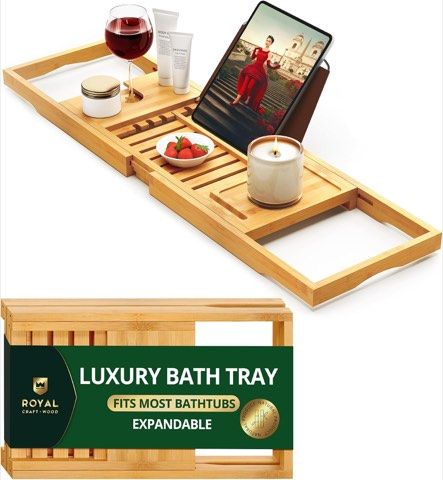
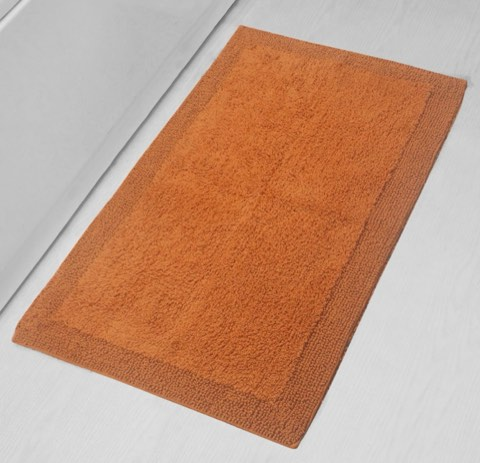
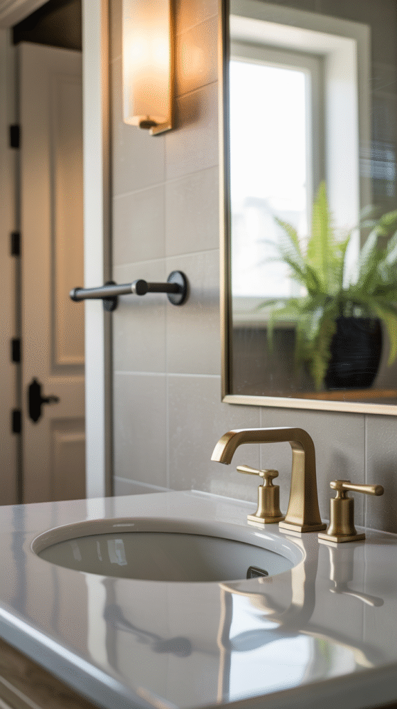
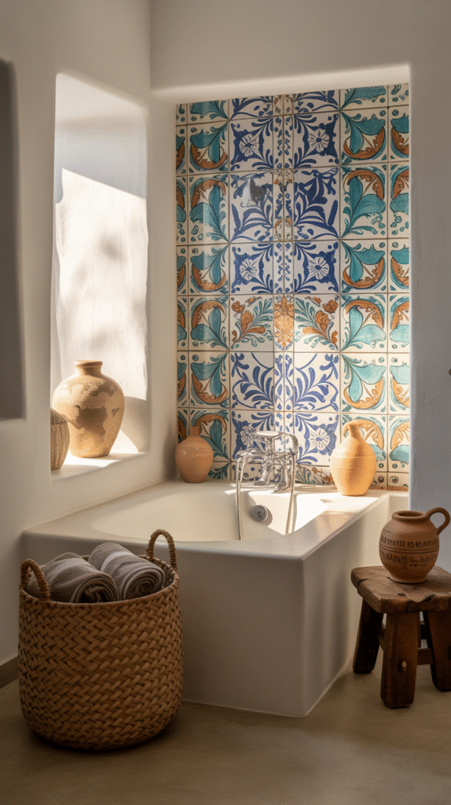
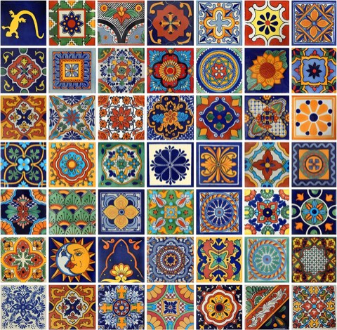
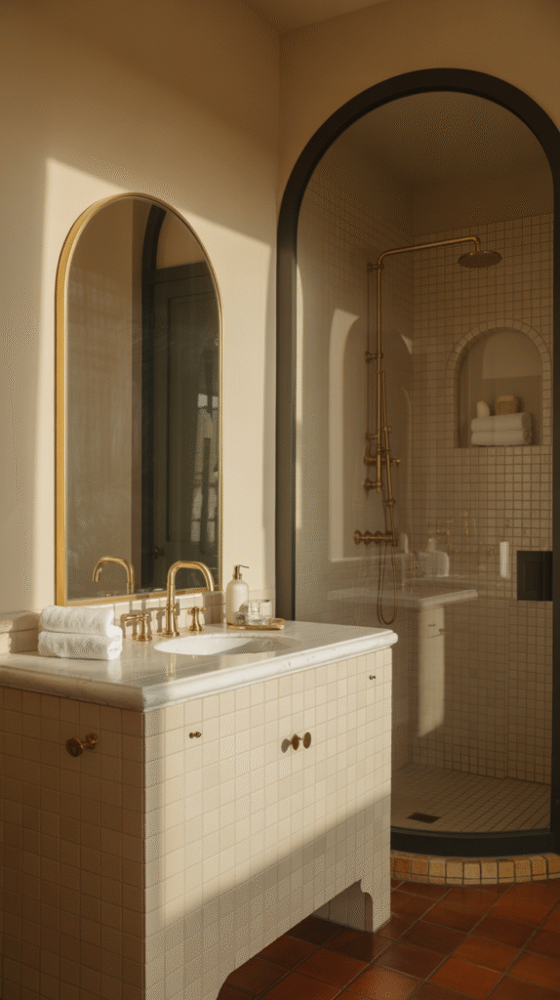
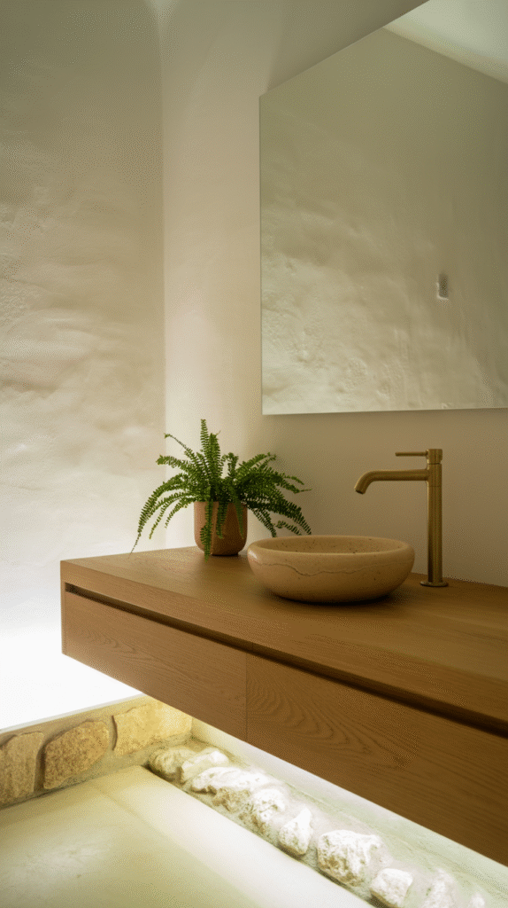
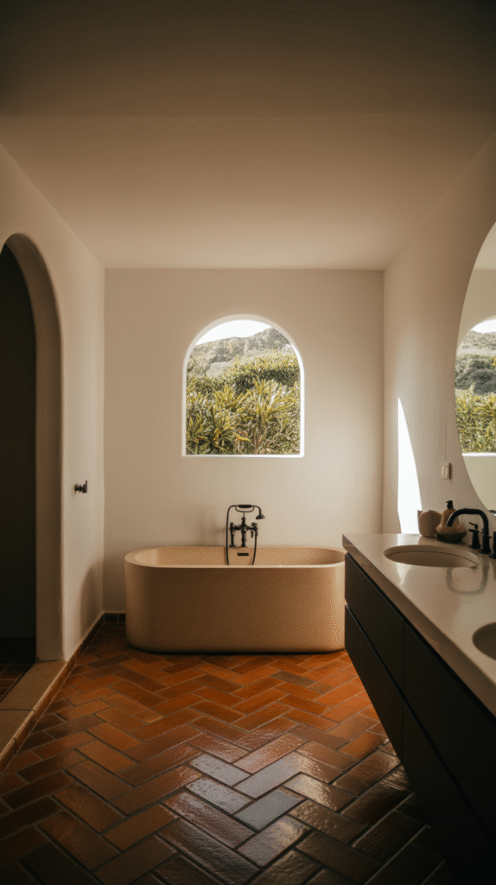
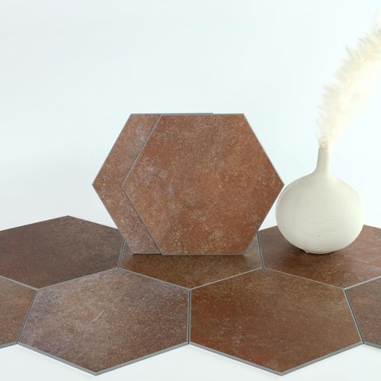
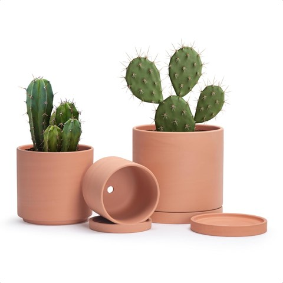

A modern Spanish bathroom is not the same thing as a generic spa-inspired bathroom.
The difference comes down to a handful of specific materials and details, not a vague mood.
Warm, earthy and a little rustic, but with clean, contemporary lines holding it together.
These five elements are what actually separate the look from a Pinterest-board approximation of it.


ROYAL CRAFT WOOD Foldable Bathtub Tray Caddy, Expandable Bamboo Bath Tray
Shop on Amazon
Home Weavers Luxury 100% Cotton Reversible Bathroom Rug, Washable, Burnt Orange
Shop on AmazonPulling It All Together
Five strong elements can still feel disjointed without a plan to unify them.
Stick to a warm, earthy palette throughout, terracotta, sand, ivory, olive, and burnt sienna all work together naturally.
A humidity-loving plant, like a fern or eucalyptus stem, adds a fresh, living note to the warm tones.
Soft textiles, a Turkish cotton towel, a linen curtain, keep the room feeling relaxed rather than staged.
Dimmable, warm-toned lighting finishes the look, since harsh overhead light undercuts everything else on this list.
1. Mixed Metal Finishes
Matching every metal finish in a bathroom is the safe choice, not the Spanish one.
Brushed gold faucets with matte black towel bars, aged bronze with chrome, or copper with nickel all work well together.
The key is balance, two finishes, spread evenly through the room, rather than scattered unevenly or piled into one corner.
Done with restraint, mixed metals read as layered and considered rather than mismatched.
This is one of the simplest ways to add a contemporary edge to an otherwise traditional material palette.

2. Handcrafted, Not Mass-Produced Accents
Generic, store-bought accessories work against the whole feel of this style.
Hand-painted Talavera tile, a woven storage basket, or a rustic wood stool all carry a sense of craft that a factory-made equivalent cannot replicate.
A single handblown glass sconce swapped in for a standard fixture can change the character of an entire room.
Secondhand shops, artisan markets, and small online sellers are consistently the best source for pieces like these.
These details are what keep the room from reading as a themed set rather than a genuine style.


Handmade Mexican Talavera Tile Set, 100 Pieces, 4 x 4 Inch, Hand-Painted
Shop on Amazon3. Arched Details
A curve softens a bathroom's typically hard, rectangular lines more than almost any other single detail.
An arched mirror, an arched shower niche, or an arched doorway all work.
Arches echo traditional Spanish architecture, courtyards, doorways, covered walkways, which is part of why they read as authentic rather than decorative.
A painted arch behind a mirror even approximates the look without any construction involved.
Of the five elements on this list, this is the one with the most outsized visual payoff for the effort involved.

4. Textured White Walls
A fully smooth white wall can read as sterile, almost clinical.
Plaster, limewash, or tadelakt finishes avoid that by adding visible texture and depth.
These finishes bounce natural light around a room in a way flat paint cannot.
They also create a quiet backdrop that lets tile, fixtures, and hardware stand out without competing.
A limewashed wall tends to hide small marks and fingerprints better than a flat finish, which matters in daily use.


5. Terracotta Tiles, Done With Restraint
Terracotta is the foundation of Spanish design, full stop.
The clay tone brings instant warmth, and the texture gives a room a lived-in feel without looking worn down.
Classic square tiles work, but herringbone or hexagonal layouts give the same material a more current edge.
Pairing terracotta floors with matte black fixtures creates a strong, modern contrast worth trying.
Sealing the tile properly matters here, terracotta is porous and needs protection from water damage.


W and S Hexagon Peel and Stick Floor Tile, 24 Sheets, Red Brown Terracotta Look
Shop on Amazon
D'vine Dev Classic Terracotta Pots with Saucers, 3 Pack, 5, 6 and 8 Inch
Shop on AmazonFinal Thoughts
None of these five elements actually require a full renovation to try out.
Terracotta brings warmth.
Textured walls keep things from feeling sterile.
Arches add softness.
Handcrafted pieces bring soul.
Mixed metals add confidence.
Together, they land somewhere between rustic and contemporary, which is the entire point of the style.
If only one single change happens from this entire list, the arches are genuinely worth prioritizing first above everything else.